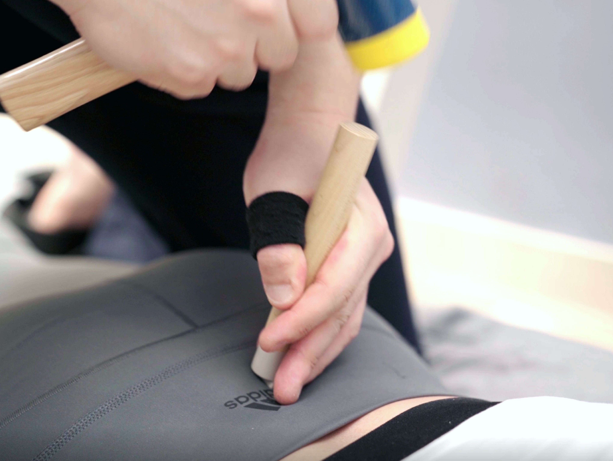
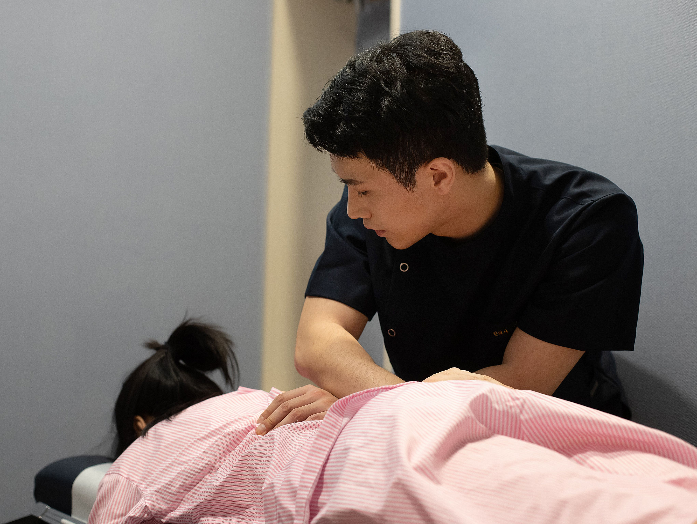
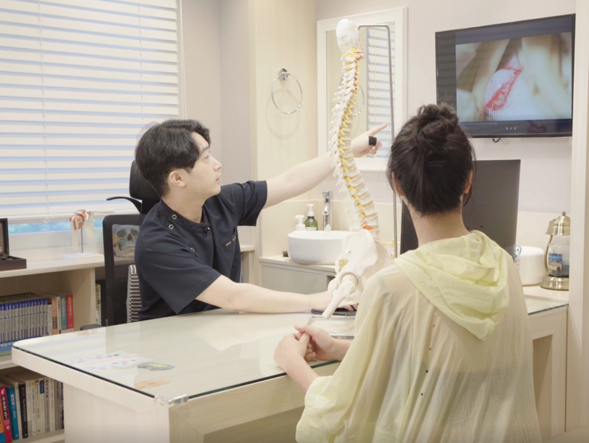
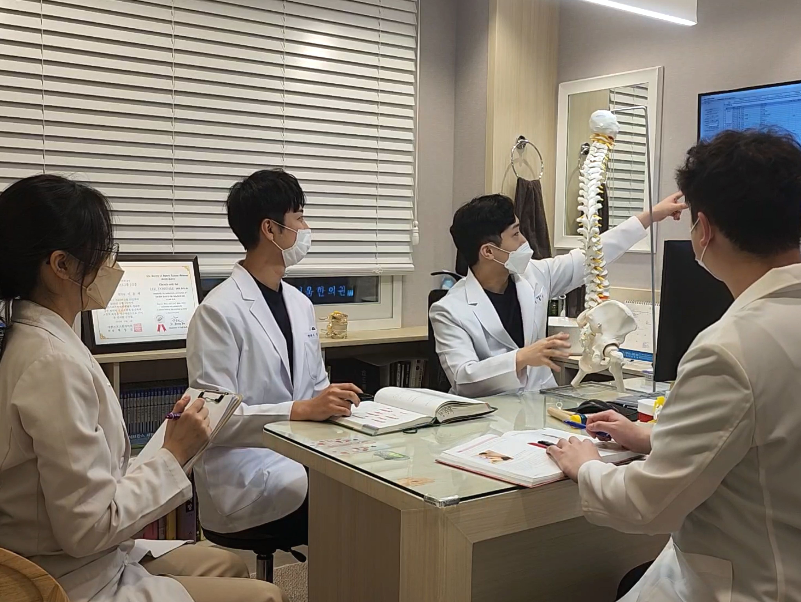

BODY-ALL WIKI
BODY-ALL WIKI
수원 추나요법 추천:
뼈 하나하나의 배열을 바로잡는
세밀한 분절 교정과 골타요법

허리통증이나 목통증이 시작된 지 얼마 되지 않았거나 증상이 경미한가요?
이런 경우에는 숙련된 한의사의 추나요법만으로도 충분히 좋은 결과를 기대할 수 있습니다.
바디올의 추나는 단순 근육 이완을 넘어 뼈 하나하나를 세밀하게 살핍니다.
A. 핵심은 '세밀한 분절 교정'과 '교타 기법(골타요법)의 결합'에 있습니다.
바디올은 증상이 가벼운 분들께도 뼈 하나하나의 배열을 조정하는 세밀한 수기 분절 교정을 시행합니다.
여기에 의료용 교정도구를 활용한 교타 기법(골타요법)을 더해,
일반적인 추나보다 한 단계 더 세밀하게 척추 분절을 조정하여 구조적 회복을 지향합니다.

1. 바디올 추나요법의 기술적 특징
공간확보 기법은 SART만의 핵심 가치이지만, 바디올의 추나에도 그에 못지않은 세밀한 교정 기술이 담겨 있습니다.
-
뼈 하나하나를 만지는 분절 교정:
단순히 척추 전체의 라인을 밀고 당기는 방식이 아닙니다. 통증의 원인이 되는 특정 분절(Segment)을 정확히 찾아내어 제자리를 찾도록 돕습니다. -
안전한 교타 기법(골타요법):
손으로 닿기 어려운 미세한 틀어짐까지 세밀하게 조정하기 위해 안전한 의료용 도구를 활용합니다. 이는 많은 분들이 검색하시는 골타요법의 원리를 현대적으로 적용한 것입니다. -
관절 가동 범위의 회복:
틀어짐으로 인해 뻣뻣해진 관절의 움직임을 정상화하여 통증 완화와 함께 몸의 부드러운 유연성을 되찾아줍니다.

2. 이런 분들께 바디올 추나 치료를 추천합니다
증상이 만성화되어 복잡한 치료로 넘어가기 전, 골든타임을 잡는 것이 현명합니다.
무거운 물건을 들거나 잘못된 자세로 갑자기 발생한 허리·목 통증
저림이 심하지 않고 간헐적인 통증만 느껴지는 경우
거북목이나 골반 틀어짐이 느껴지기 시작한 초기 단계
비용과 시간 대비 효율적으로 척추 건강을 관리하고 싶은 분

3. 추나요법 건강보험 및 실손보험 활용법
| 구분 | 내용 및 혜택 |
|---|---|
| 건강보험 적용 | 연간 20회까지 건강보험 혜택 적용 가능 |
| 실손보험(실비) | 가입 보험 약관에 따라 급여 항목 실비 청구 가능 |
| 자동차보험 | 교통사고 후유증 예방을 위한 세밀한 교정 지원 |
4. 교육이사가 직접 지도하는 교정 엘리트 팀

바디올의 추나는 단순한 마사지가 아닙니다. 척추진단교정학회 이사 겸 교육위원인 이동해 대표원장이 동 학회 소속 의료진과 함께 매일 정례스터디와 케이스발표를 통해, 뼈 하나하나를 다루는 세밀한 노하우를 직접 전수하며, 일관성 있는 치료효과를 위해 노력하고있습니다.
어떤 원장님께 진료받더라도 4만 례의 임상 데이터를 바탕으로 한 최적의 분절 교정 포인트에 집중하여 만족도 높은 치료 결과를 지향합니다.